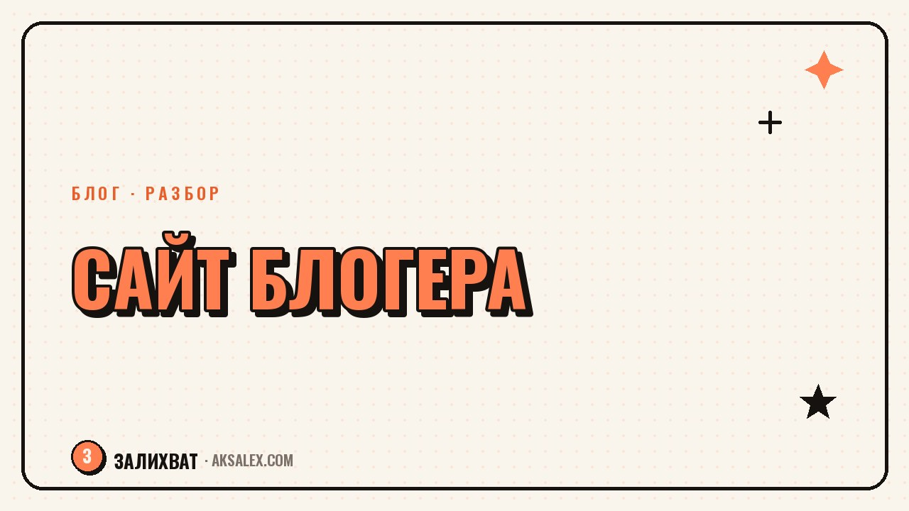

Нужен ли блогеру свой сайт, если есть соцсети

Вопрос звучит почти в каждом разговоре про развитие блога: соцсети дают охваты, но ими не владеешь, а сайт требует времени и денег, зато принадлежит только тебе. Истина, как обычно, зависит от задачи. Разберём, в каких случаях сайт блогеру правда нужен, в каких он лишняя трата сил, и как принять это решение без паники от очередного 'все говорят, что надо'.
Почему вопрос вообще встаёт
Соцсети удобны для старта: там уже есть аудитория, алгоритмы помогают показывать контент новым людям, а завести страницу можно за десять минут без единого рубля вложений. Но у этого удобства есть цена - платформа диктует правила игры. Алгоритм может изменить охваты, аккаунт может заблокировать поддержка по ошибке, а формат контента полностью зависит от того, что сейчас продвигает конкретная сеть.
Сайт работает по другим правилам: трафик растёт медленнее, зато не зависит от настроения алгоритма и остаётся твоим активом даже через несколько лет. Вопрос не в том, что лучше в абстрактном смысле, а в том, что решает твою конкретную задачу на этом этапе.
Когда сайт действительно нужен
Продажи через поиск, а не только через подписчиков
Если люди ищут твою тему в поисковике - рецепты, гайды, услуги, обзоры - сайт со статьями начинает приводить новых посетителей независимо от того, растёт ли у тебя блог в соцсетях сейчас. Это долгая игра: первые месяцы трафика мало, но через полгода-год статьи продолжают работать сами, без новых постов.
Хранение и структура контента
В соцсетях сложно найти пост полугодовой давности, даже если это лучший материал блога. На сайте материалы организованы в рубрики, их можно обновлять и ссылаться из разных источников - и из Telegram, и из Instagram, и из рассылки.
- Нужна независимость от блокировок и изменений алгоритмов конкретной платформы
- Тема хорошо ищется в поисковиках (рецепты, гайды, инструкции, услуги)
- Есть продукт или услуга, которую нужно подробно описать и показать
- Хочется единое место, куда ведут ссылки со всех соцсетей
Когда сайт не нужен и только отвлекает
Если блог живёт за счёт личности и прямого контакта с аудиторией - сторис, живые эфиры, быстрые реакции на тренды - сайт в таком формате скорее мёртвый груз. Аудитория приходит смотреть на человека здесь и сейчас, а не читать структурированные статьи в удобное время.
Также сайт не имеет смысла, если на старте нет ресурса его поддерживать. Заброшенный сайт с устаревшей информацией вредит репутации больше, чем его полное отсутствие - лучше вложить силы в один канал и довести его до результата, чем распыляться на несколько площадок сразу.
Площадка не делает контент лучше сама по себе. Если на одной платформе материалов и сил хватает на уверенный результат, вторую площадку стоит добавлять только ради конкретной задачи, а не для галочки.
Сравнение форматов: сайт, соцсети, мессенджер
У каждого формата своя роль, и часто правильное решение - не выбрать один вариант навсегда, а использовать несколько по назначению: соцсети для охватов и живого контакта, сайт для накопления контента, мессенджер для близкого круга и продаж.
| Формат | Сильная сторона | Слабая сторона |
|---|---|---|
| Сайт | Независимость, поиск, структура | Медленный старт, нужны время и деньги |
| Соцсети | Быстрый старт, готовая аудитория | Зависимость от алгоритмов и правил платформы |
| Telegram-канал | Прямой контакт, нет алгоритма | Нет внешнего притока новых читателей без рекламы |
| Email-рассылка | Канал, который точно не заблокируют | Долго растёт база, нужен повод подписаться |
Как решить для своего случая
Прежде чем делать сайт, полезно честно ответить на три вопроса: ищут ли твою тему в поисковиках, готов ли ты вести его регулярно хотя бы полгода, и решает ли сайт задачу, которую соцсети решить не могут. Если на все три вопрос ответ 'да' - сайт оправдан. Если хотя бы на один 'нет' - пока можно обойтись без него.
Начинать не обязательно с полноценного многостраничного сайта. Можно сделать одну посадочную страницу с описанием себя и ссылками на соцсети, и уже по тому, как ей пользуются читатели, решить, стоит ли расширять формат до блога со статьями.
Частые вопросы
С чего начать, если решил делать сайт для блога?
Начни с минимального прототипа: одна страница с описанием себя, ссылками на соцсети и контактами. Полноценный блог со статьями стоит разворачивать только после того, как убедился, что готов вести его регулярно.
Заменяет ли сайт соцсети для блогера?
Нет, это разные инструменты с разными задачами: соцсети дают охваты и живой контакт, а сайт работает как независимый архив и источник поискового трафика. Хорошо работают они вместе, а не вместо друг друга.
Сколько времени нужно, чтобы сайт начал приводить читателей?
Обычно первые заметные результаты через поиск появляются через полгода-год регулярных публикаций. Это долгосрочный инструмент, который не даёт быстрого эффекта, в отличие от поста в соцсетях.
Стоит ли делать сайт, если блог живёт за счёт личного контакта с аудиторией?
Не обязательно - такому формату ближе соцсети, сторис и прямые эфиры, а не структурированные статьи. Сайт здесь скорее дополнение для архива лучших материалов, а не основная площадка.
Что хуже: не делать сайт или сделать и забросить?
Заброшенный сайт с устаревшей информацией вредит репутации сильнее, чем его полное отсутствие. Лучше честно оценить ресурс на поддержку сайта заранее, чем начинать и бросить через пару месяцев.
Раз тема оказалась полезной, вот что почитать следующим. Разбираем, почему страшно говорить о своих результатах и как рассказывать о деле без неловкости.
Читать статью →а не вручную